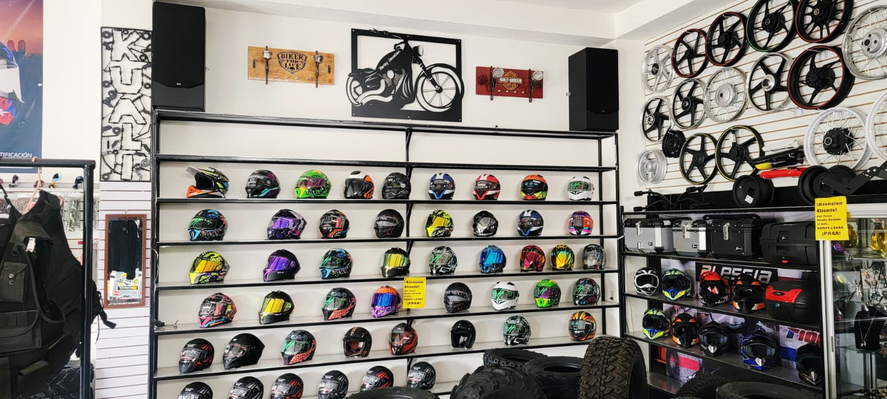
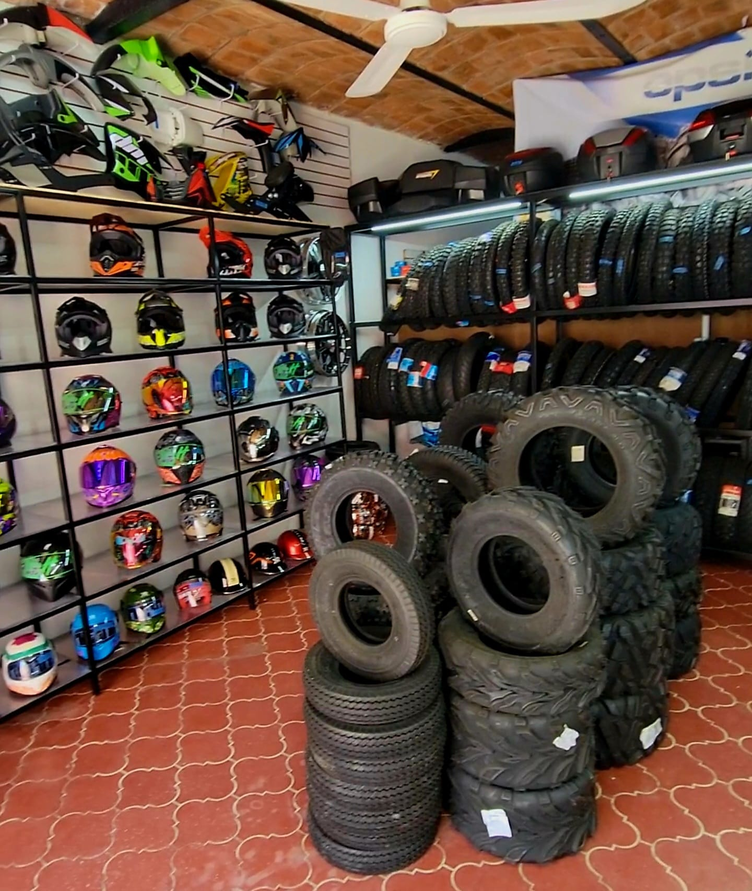
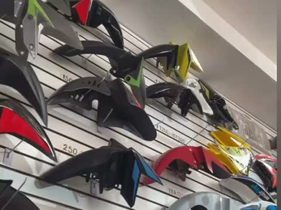

Todo para tu moto en un solo lugar. Domina el Camino.
En Moto Refacciones Kuali encuentras cascos certificados, neumáticos, frenos, cadenas, aceites y accesorios con stock disponible y asesoría de motociclistas para motociclistas. Tres sucursales para mantener tu pasión rodando: Tlaltenango, Colotlán y García de la Cadena.
Tu moto no puede esperar… por eso tenemos la refacción lista cuando la necesitas.
Somos una refaccionaria 100% enfocada en el motociclismo. Aquí no vienes por una pieza: vienes por todo lo que tu moto necesita para seguir rodando segura.
Stock real en piso
Refacciones, consumibles y accesorios en existencia para que salgas rodando el mismo día, sin listas de espera.
Tres sucursales
Matriz en Tlaltenango, Zacatecas, y sucursales en Colotlán, Jalisco y García de la Cadena. Cerca de donde ruedas.
Asesoría de motociclistas
Te decimos qué pieza pide tu modelo y cómo cuidarla. Atención directa de gente que también anda en moto.
Equipo que te protege
Cascos y equipo de protección para rodar con libertad y fuerza, pero sobre todo con seguridad.
Tres estantes,
una sola pasión
Del casco a los neumáticos: en Kuali cubrimos cada parte de tu moto con producto en existencia.



De la duda a la pieza correcta, en tres pasos
Escríbenos o pásate a cualquier sucursal. Te atendemos directo, sin intermediarios.
Dinos tu moto y qué necesitas
Mándanos marca, modelo y año por WhatsApp, o tráelos anotados. Con eso identificamos la refacción exacta.
Confirmamos existencia y precio
Revisamos el stock en las tres sucursales y te pasamos precio cerrado, sin sorpresas ni letras chiquitas.
Pasas, pagas y sigues rodando
Recoges tu pieza o accesorio en la sucursal que te quede más cerca y regresas al camino el mismo día.
Un casco para cada camino
y para cada cabeza
La seguridad no se improvisa. En Kuali tenemos uno de los muros de cascos más completos de la región: integrales para carretera, abatibles para ciudad y de cross para la terracería, en todas las tallas y con diseños que sí quieres traer puestos.
-
Integrales, abatibles y de cross
El estilo correcto según cómo y dónde ruedas.
-
Tallas de CH a XL
Te medimos en tienda para que el casco quede firme y cómodo.
-
Cascos certificados
Modelos con certificación de seguridad y micas de repuesto disponibles.
-
Para todos los presupuestos
Desde tu primer casco hasta el de largo camino, con opciones en cada rango de precio.
para atenderte
y Jalisco
en la matriz
en el motociclismo
Rueda lo que ruedes, tenemos tu refacción
Atendemos por igual a quien usa la moto para trabajar y a quien la usa para escaparse el fin de semana.
Deportiva
Trabajo y reparto
Doble propósito
Cuatrimoto (ATV)
Clásica y chopper
Neumáticos
para cada terreno
El único punto de tu moto que toca el suelo. Elige bien y te lo montamos: llanta nueva, cámara y corbata en la misma visita.
- Llantas para calle y ciudad
- Doble propósito y terracería
- Llantas de trabajo reforzadas
- Llantas para cuatrimoto (ATV)
- Cámaras y corbatas
- Rines y rayos
Refacciones y carrocería
Lo que se desgasta con cada kilómetro, clasificado por modelo y listo para llevar:
- Guardabarras y piezas de plástico
- Balatas, discos y sistema de freno
- Cadenas y kits de arrastre
- Baleros, retenes y sellos
- Bujías, cables y chicotes
- Aceites y lubricantes
- Focos, micas y sistema eléctrico
Accesorios y protección de carga
Súmale a tu moto comodidad, seguridad y estilo. Lo que necesitas para viajar cargado y rodar tranquilo:
- Baúles, maletas y parrillas
- Puños, manubrios y espejos
- Chamarras, guantes y protecciones
- Faros y tiras LED
- Candados y sistemas antirrobo
- Fundas y cuidado de la moto
Tres sucursales, un mismo compromiso
Llega a la que te quede más cerca o escríbenos por WhatsApp y te confirmamos existencias antes de que salgas.
Tlaltenango, Zacatecas
Jue y Dom: 10:00 a 15:00
Colotlán, Jalisco
García de la Cadena, Zacatecas
Pide tu refacción o cotización
Dinos qué moto tienes y qué necesitas. Te respondemos por WhatsApp con disponibilidad y precio.
Atención directa
Hablas con el mostrador de Kuali, no con un call center.
-
Matriz
Emiliano Carranza #130,
Tlaltenango, Zacatecas.